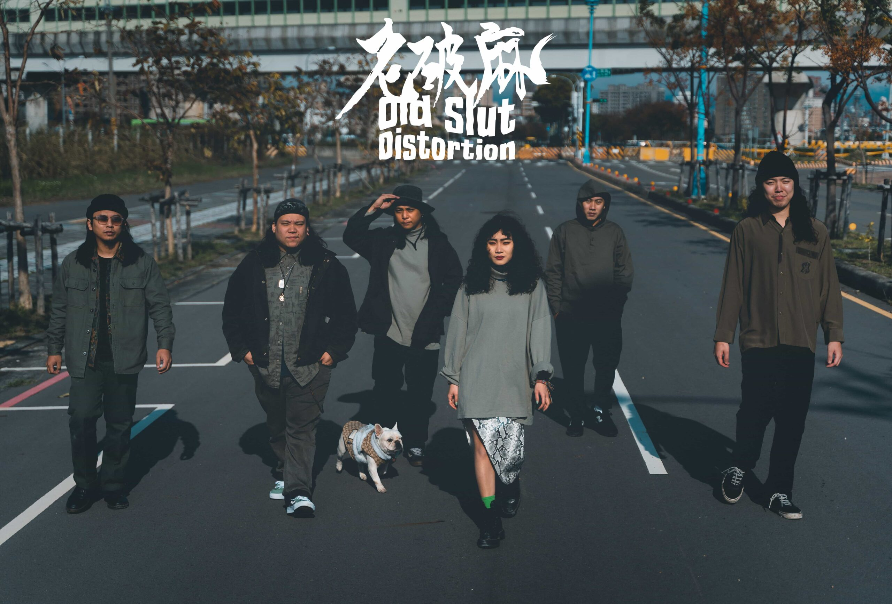

老破麻 O.S.D
老破麻現由男女雙主唱李仁喆與嚴若玲、吉他手陳建發與崇家璇、貝斯手沈皇谷及鼓手林子傑所組成。女主唱以吼腔為主，男主唱以清腔再帶點像吉他效果器 Distortion 的效果演唱；以邪典搖滾(Cult Rock)以及喜劇金屬(Comedy Metal)自居，演奏風格融合 Rock、Grunge、Bossa Nova、Hardcore、Funcky、hip-hop、Jazz (可能還有Raggae)...等多元曲風，在詞曲的安排上則以嘲諷主義做為所有創作核心。自立麻式哲學，強調「不強調平等」，歧視本身就不存在。以當代歌仔冊自居，用批判式破歌笑看人生百態。